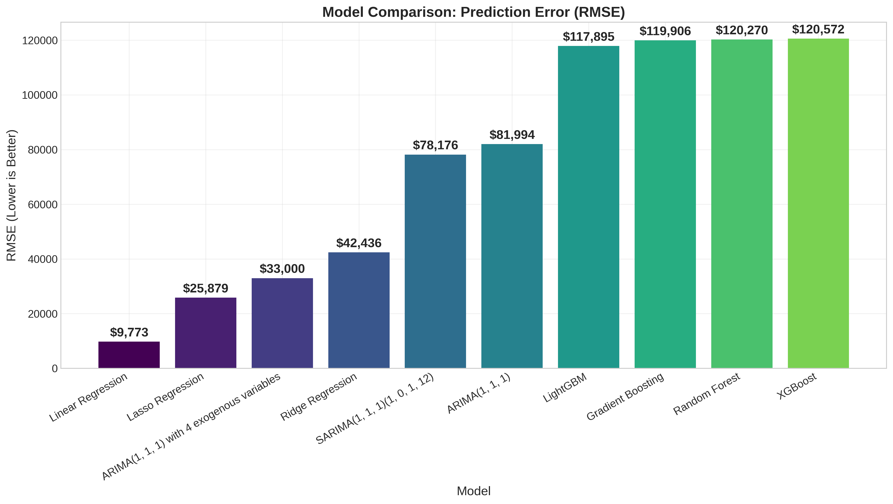
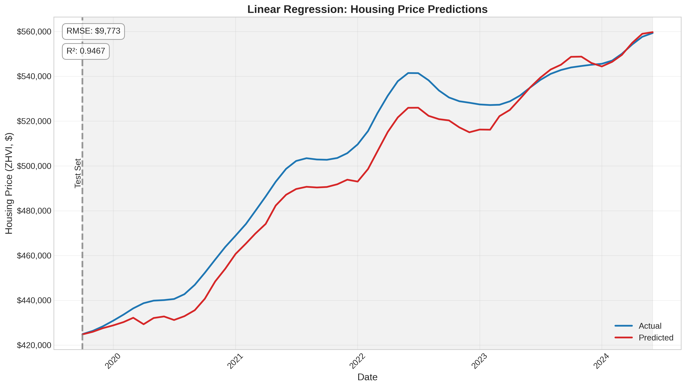
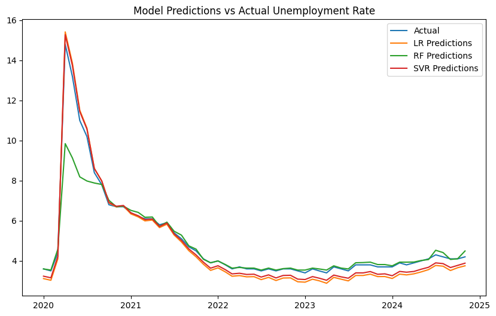
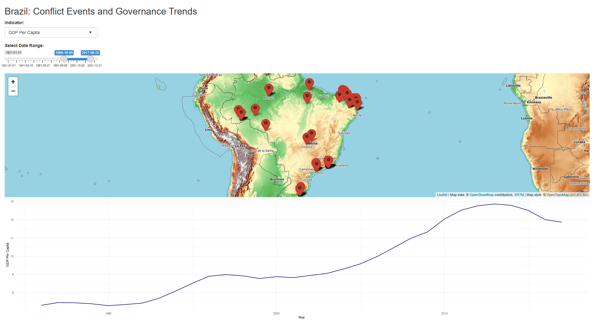

Washington, D.C. Housing Market Analysis
GitHub Repository: https://github.com/RaySaysHi/capstone-project
This comprehensive analysis of the Washington, D.C. housing market from 2000-2024 examines key economic factors influencing housing prices and develops predictive models to forecast market trends.
Key Findings:
- The DC housing market has experienced distinct market cycles over the 24-year period, including a housing boom (2000-2006), bust (2006-2009), stabilization (2009-2012), recovery (2012-2019), pandemic boom (2020-2021), and rate hike era (2022-2024).
- Housing prices in DC show strong positive correlations with CPI (0.87), median household income (0.85), and population growth (0.64).
- Time series analysis confirms non-stationarity in housing prices requiring differencing for modeling, and reveals significant seasonal patterns with peaks in June and troughs in January.
- Unemployment rate changes lead housing price movements by approximately 10 months (correlation: -0.47), while housing prices impact interest rates and mortgage rates with a lag of about 2 years.
- Linear regression models with economic indicators significantly outperform time series and machine learning approaches for housing price prediction.
Modeling Approach:
- Implemented multiple modeling techniques including standard linear regression, Lasso, Ridge, ARIMA, SARIMA, and machine learning models (Random Forest, Gradient Boosting, XGBoost, LightGBM)
- Standard linear regression achieved the best performance with an R² of 0.9467 and MAPE of just 1.62%
- Feature importance analysis revealed that income-related variables are the strongest predictors of housing prices

Model Comparison by RMSE (Lower is Better)

Linear Regression Model Predictions vs Actual Housing Prices
Unemployment Trends Modeling
GitHub Repository: https://github.com/RaySaysHi/unemployment-trends-modeling
Colab Notebook: View on Google Colab
This project involves preparing and analyzing employment and unemployment data from the U.S. Bureau of Labor Statistics (BLS) to predict unemployment trends over time.
Project Overview:
- Cleaned and standardized time series data from various economic indicators
- Reshaped data from wide to long format for analysis
- Implemented machine learning models to predict unemployment rates
- Compared model performance between Linear Regression, Random Forest, and Support Vector Regression
Data Sources:
- Unemployment Rate
- Civilian Labor Force
- Civilian Employment
- Civilian Unemployment
- Nonfarm Employment
- Nonfarm Business Productivity
- Nonfarm Business Unit Labor Costs
- Nonfarm Business Real Hourly Compensation
- Consumer Price Index
Key Features:
- Feature engineering including interaction terms, lagged features, and rolling averages
- Hyperparameter tuning for Random Forest and SVR models
- Time-based train-test split to simulate real-world forecasting scenarios
- Comparative analysis of model performance
Model Performance:
- Linear Regression and SVR performed well, even with the 2020 pandemic anomalies
- Random Forest struggled with the initial COVID-19 unemployment spike but improved with more stable data
- Feature engineering significantly improved SVR performance

Unemployment Model Performance Comparison
Interactive Dashboard on Governance and Conflict in Brazil
Shiny App: https://raysayshi.shinyapps.io/project-assignment-3-RaySaysHi/
This Shiny application offers an interactive exploration of governance trends and conflict events in Brazil, leveraging datasets from the V-Dem Dataset and the Uppsala Conflict Data Program (UCDP).
Dashboard Components:
- Interactive Map: Displays conflict events in Brazil with markers showing location, date, and number of deaths. Users can hover over markers for brief descriptions or click for detailed information.
- Dynamic Line Chart: Visualizes governance indicators over time, including Polyarchy, Corruption Index, Freedom of Expression, and GDP Per Capita.
- Synchronized Controls: Date range slider controls both map and chart for consistent temporal analysis.
Data Insights:
- Correlation between governance and conflict patterns is visible when examining both visualizations.
- The geographical distribution of conflicts highlights regional disparities in governance and development.
- The extensive date range (1921-2021) provides historical context for current governance and conflict issues.
- Economic indicators like GDP Per Capita help explore the relationship between economic conditions and political stability.

Interactive Dashboard on Governance and Conflict in Brazil
This interactive platform enables users to explore and understand the complex interplay between governance indicators and conflict events in Brazil, serving as a valuable tool for researchers, educators, and anyone interested in Brazilian politics.
Google Analytics and API Data Pipeline to PostgreSQL
GitHub Repository: https://github.com/RaySaysHi/Google_Analytics_and_API_Dog_Data_Into_PostgreSQL
This project contains scripts to set up a data pipeline that extracts data from Google Analytics and an API, then loads it into a PostgreSQL database. I developed this solution during my time as a Data Analyst at Endeverus, where I needed to expand my role to include data engineering tasks.
Features:
- Extract data from Google Analytics 4 (GA4) properties
- Extract user data from a REST API with JWT authentication
- Store data in a PostgreSQL database
- Configurable environment variables for secure credential management
- Automated ETL processes for regular data updates
Implementation Details:
- Created robust data pipeline scripts that handle authentication, data extraction, transformation, and loading
- Developed SQL schema for efficient data storage and retrieval
- Implemented error handling and logging for reliable operation
- Used environment variables to secure sensitive credentials
This template can be customized for various projects to help manage and analyze data from Google Analytics and API sources. The repository includes detailed documentation on setup and customization.
rding0305@gmail.com